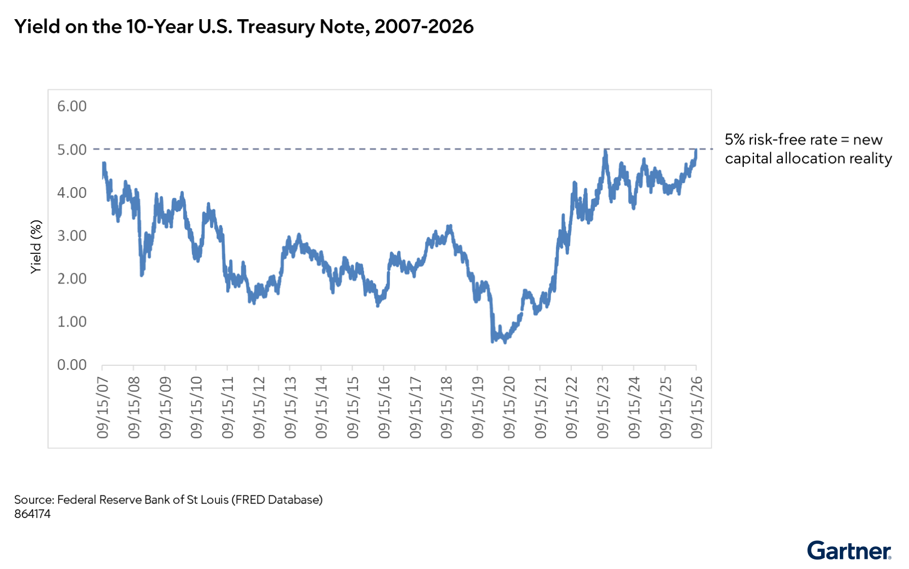

미국 10년물 국채 수익률 5%는 주식시장 뉴스로만 끝나지 않는다. 회사채와 기간 대출의 기준 금리도 함께 올라간다. 그래서 CFO는 성장 계획과 투자 승인 기준, 재융자 계획, 운전자본 운용 방식을 한꺼번에 손봐야 한다.
핵심 요약
미국 10년물 국채 수익률이 5%를 넘으면 자본비용이 뚜렷하게 올라간다. 그 환경에서는 과거 저금리 시절에 만든 투자 기준이 더는 맞지 않을 수 있다. CFO는 이사회와 함께 자본배분 우선순위, 내부 수익률 기준, 재융자 일정, 현금 운용 체계를 다시 정해야 한다. 특히 AI 인프라처럼 선투자가 큰 영역은 자본시장 조정 위험까지 같이 봐야 한다.
분석
2026년 9월 15일, 미국 10년물 국채 수익률은 2007년 이후 최고 수준으로 마감했다. 장중 수익률은 5.04%까지 올랐다. 투자자들은 유가 상승에 따른 인플레이션 우려와 미국 연방 재정적자 확대를 주시했다.
대부분의 헤드라인은 국채 수익률 상승이 주식, 특히 AI 주식에 미치는 악영향에 집중한다. 하지만 5%대 기준금리는 주식시장 이야기만이 아니다. 10년물 국채 수익률은 회사채와 기간 대출 같은 기업 차입의 기준 금리로 쓰인다. 그래서 이 변화는 전통 산업을 포함한 기업 재무 규칙 자체를 바꾼다.
CFO에게 이 문제는 자금조달을 넘어 거버넌스 과제이기도 하다. 저금리 시절에 이사회가 승인한 성장 목표, 투자 계획, 기대 수익률은 새 환경에서 다시 봐야 한다. 2007년 이후 보지 못한 수준으로의 복귀는 CFO에게 자본배분 규율을 현대화하라는 경고다. 투자 판단도 더 비싼 자본 환경을 반영해야 한다.
10년물 국채 수익률 5%는 경영진 차원의 자본배분 거버넌스 문제를 만든다. 많은 투자 거버넌스 체계가 훨씬 낮은 자본비용 환경을 전제로 설계됐기 때문이다.

크게 보기The 10-year U.S. Treasury yield has risen sharply from pandemic-era lows to about 5% by 2026, signaling a return to higher risk-free rates and a fundamentally different capital allocation environment.
The 10-year U.S. Treasury yield has risen sharply from pandemic-era lows to about 5% by 2026, signaling a return to higher risk-free rates and a fundamentally different capital allocation environment.
닫기실행 과제
원문 그대로
10년물 국채 수익률이 5%를 넘는 상태가 이어지든 아니든, CFO는 수익 보호와 자본배분 최적화를 위해 아래 여섯 영역에서 낡은 자본 규율을 현대화해야 한다.
CFO는 자본비용 상승에 맞춰 여섯 가지 축에서 자본 규율을 현대화해야 한다. 대차대조표 스트레스 테스트를 앞당기고, 이사회와 자본배분 우선순위를 다시 정해야 한다. 투자위원회는 허들레이트hurdle rate — 투자를 승인하기 위해 내부에서 정한 최소 기대수익률이다.와 DCFdiscounted cash flow — 미래 현금흐름을 현재 가치로 할인해 투자 가치를 계산하는 방식이다. 가정을 5%대 무위험 금리에 맞게 고쳐야 한다. 24~36개월 안에 만기 도래하는 고정금리 부채는 재융자 절벽을 미리 계산해야 한다. 운전자본에서 나온 유휴 현금은 자동 스윕으로 단기 국채나 머니마켓펀드에 넣어야 한다.
이 대목 전문 펼치기
자본비용 상승에 대응하는 CFO 실행안은 다음 여섯 가지다.
대차대조표 스트레스 테스트를 조기에 실행해야 한다. 10년물 국채 수익률이 5%를 넘는 상태가 이어지면 자산 가치, 할인율, 자금조달 가정, 손상 위험이 대차대조표 전반에서 달라질 수 있다. 연말 보고와 예산 결정이 마무리되기 전에 더 높은 할인율이 영업권, 장기자산, 연금채무, 자본계획에 미치는 영향을 모델링해야 한다.
이사회와 함께 자본배분 우선순위를 재설정해야 한다. 무위험 금리가 5%를 넘는 상태가 이어지면, 인수와 자사주 매입부터 기술 투자와 유기적 성장 계획까지 모든 자본 사용의 기준이 높아진다. 다가오는 이사회 안건에 최고 수익 기회로의 자본 재배치, 더 엄격한 ROICreturn on invested capital — 투입한 자본으로 얼마나 수익을 냈는지 보여주는 지표다. 기준 설정, 모든 주요 투자 결정이 갱신된 자본비용을 넘기게 하는 방안을 올려야 한다.
기업 허들레이트를 업데이트해야 한다. 투자위원회가 DCF 모델을 다시 계산해, 무위험 금리 5%대가 이어지는 환경을 반영하게 해야 한다. 자금조달 비용과 기대수익의 스프레드도 다시 평가해야 한다. 자본 포트폴리오를 위험 조정 관점에서 검토해야 한다. 재량 투자는 더 엄격한 마일스톤 기반 집행과 더 높은 수익 기대치를 적용해야 한다. 장기 가치 창출 경로가 분명한 전략 성장과 혁신 계획은 유지해야 한다.
재융자 절벽을 선제적으로 막아야 한다. 앞으로 24~36개월 안에 만기 도래하는 고정금리 부채를 목록화해 금리 상승폭을 계산해야 한다. 핵심 거래 은행과 일찍 협의해 구조 조건을 미리 고정하거나, 초과 현금흐름을 체계적 부채 상환에 배분하기 시작해야 한다.
운전자본을 수익률로 바꿔야 한다. 매출채권과 재고에 묶인 유휴 유동성을 빼내도록 운영 현금 관리를 더 촘촘히 해야 한다. 재무팀에는 매일 남는 현금을 5%대 수익률을 주는 단기 국채나 머니마켓펀드로 자동 이체하는 스윕 체계를 만들라고 지시해야 한다.